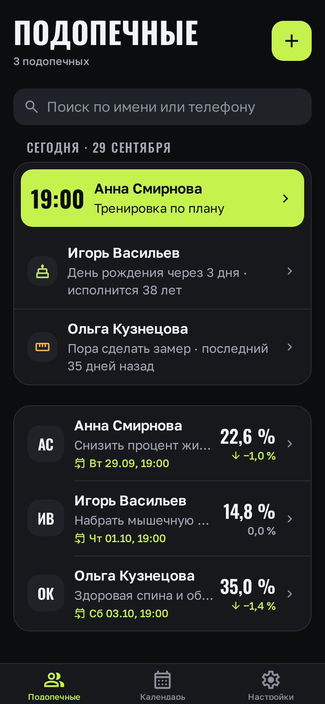
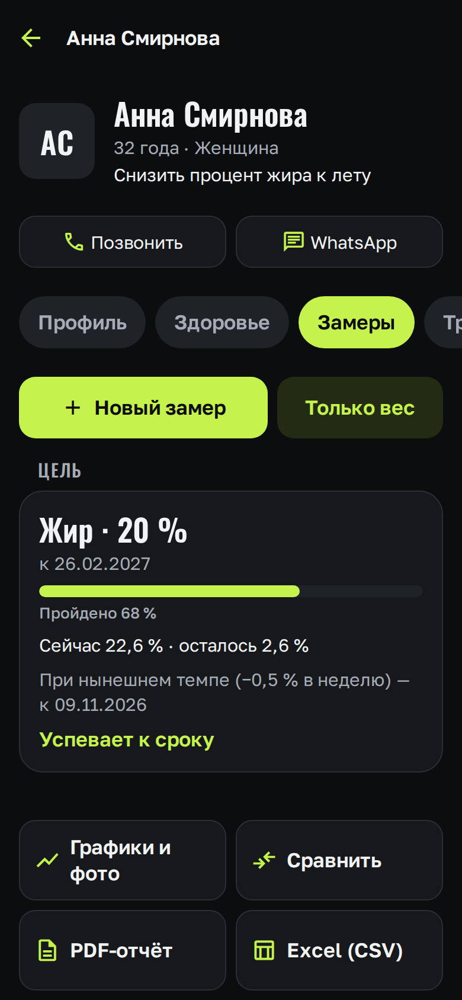
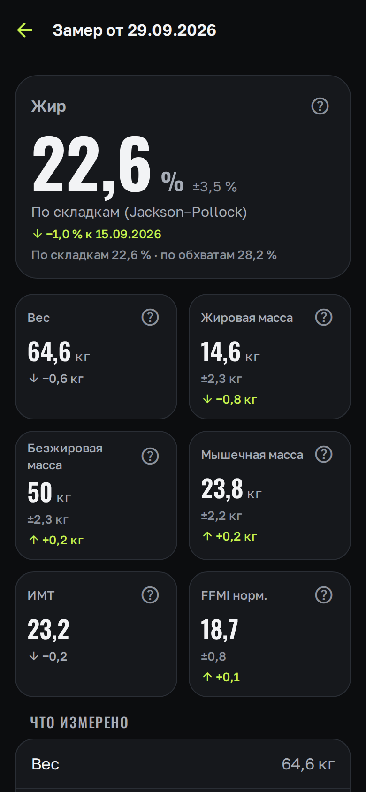
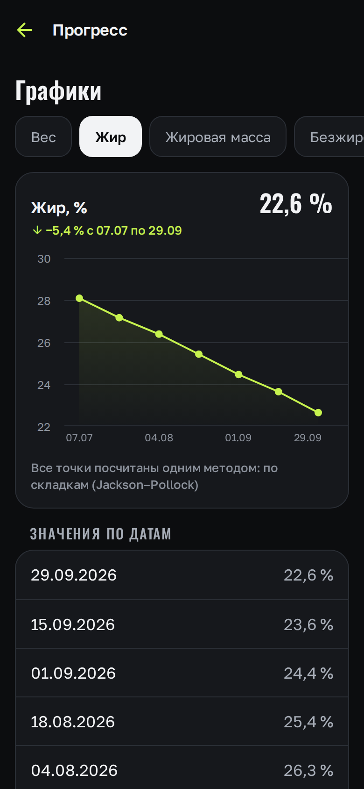
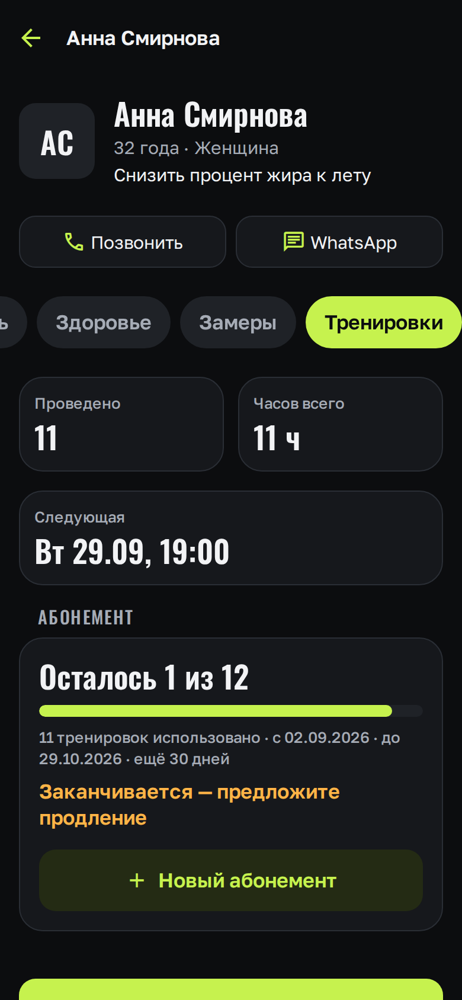
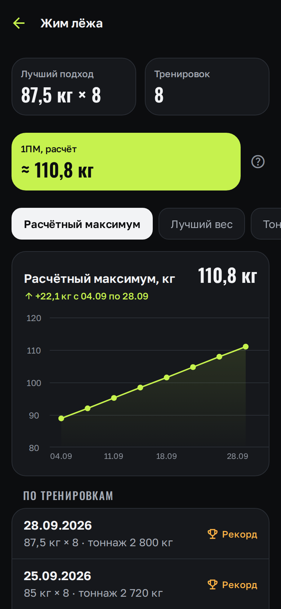
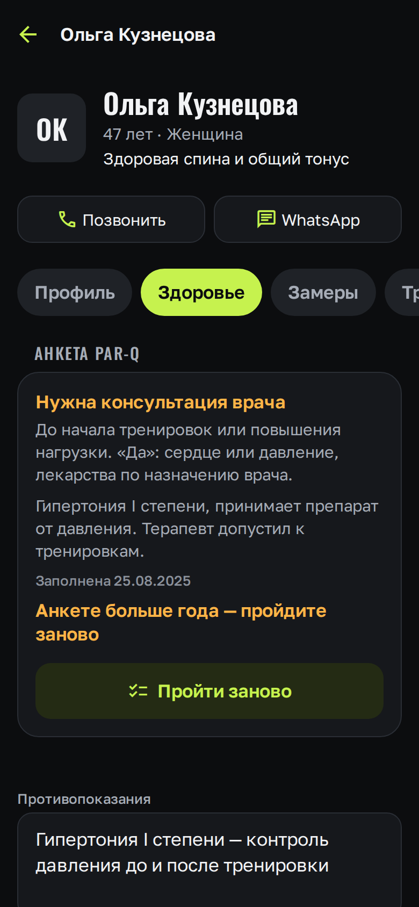
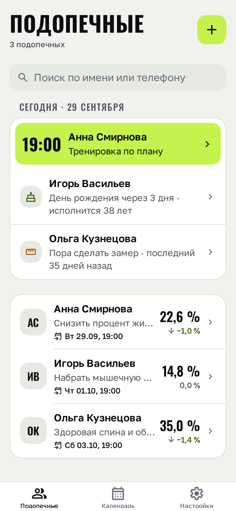
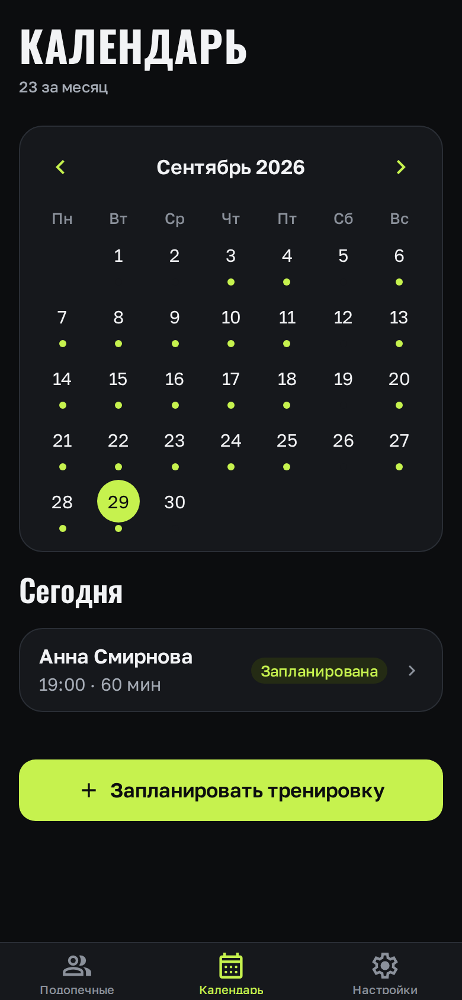

Приложение для персонального тренера
Спортивный
Треккер
Спортивная тетрадь тренера: профиль, здоровье, замеры, тренировки и питание каждого подопечного — в одном телефоне.
Демо · сентябрь 2026

Проблема
Данные клиента разбросаны по разным местам
Заметки и таблицы
Замеры в одном файле, тренировки в другом, травмы — в памяти.
Мессенджеры
Фото «до/после» и договорённости тонут в переписке.
Чужие приложения
Главная жалоба их пользователей — потеря данных.
Тренеру нужно одно место, которое не стыдно показать клиенту и не страшно потерять.
Карточка подопечного
Всё о клиенте — на одном экране
Профиль
Контакты, цель, звонок и WhatsApp в одно касание
Здоровье
Противопоказания, травмы, анкета PAR-Q
Замеры
Калькулятор состава тела и цель с прогнозом
Тренировки
Календарь, подходы, рекорды, абонемент
Питание
Калории и КБЖУ с проверкой, заметки тренера
Обязательно только имя — остальное заполняется по ходу работы.

Главная фишка
Калькулятор состава тела
Тренер вводит замеры — приложение само считает состав тела и показывает, по какой формуле и с какой погрешностью.
| Метод | Что нужно | Что считает |
|---|---|---|
| ВМС США | рост, шея, талия, бёдра | % жира, ±3–4 % |
| Jackson–Pollock 3 | 3 складки калипером, возраст | % жира, ±3,5 % |
| Boer | вес, рост | безжировая масса |
| Lee | обхваты и складки рук и ног | мышечная масса |
| ИМТ и FFMI | вес, рост, безжировая масса | индексы |
Если есть складки, основной метод — Jackson–Pollock. У каждой цифры кнопка «?» с объяснением простыми словами.

Прогресс
Результат видно — и клиенту тоже
Графики каждого показателя по датам: вес, % жира, массы, обхваты
Цель с прогнозом: «при нынешнем темпе — к 09.11.2026»
Сравнение любых двух замеров: что изменилось и насколько
Фото «до/после» рядом или шторкой — ведите пальцем
Расчёты не хранятся, а считаются из замеров: уточнили формулу — пересчиталась вся история.

Тренировки
От плана до личного рекорда
Серии: «каждый вт и чт на 4 недели» одной кнопкой
Подходы, повторы, вес; «повторить прошлую»
Личные рекорды и расчётный максимум (1ПМ)
Таймер отдыха с вибрацией
Абонемент: «осталось 1 из 12» и напоминание о продлении


Здоровье
Безопасно для клиента и по закону
Согласие на обработку данных о здоровье (152-ФЗ) — при создании карточки, с датой и версией текста
Анкета PAR-Q: 7 вопросов «Да/Нет», итог сразу — «можно начинать» или «нужен врач»
Противопоказания, травмы и ограничения — всегда под рукой
Анкете больше года — приложение напомнит пройти заново

Каждый день
С чего начать день
Блок «Сегодня»: тренировки дня, дни рождения, кому пора на замер
Календарь всех подопечных с точками тренировок
Уведомление перед тренировкой: за 30 мин, 1 или 2 ч
Светлая и тёмная тема: тёмная не слепит в зале, светлая видна на солнце


Отчёты и связь
Для клиента — отчёт, для тренера — связь
PDF-отчёт
«Прогресс за период»: цифры, графики, фото и имя тренера. Отправка в любой мессенджер.
Excel (CSV)
Все замеры и расчёты таблицей — откроется в Excel и Google Таблицах.
Связь
Звонок, WhatsApp и Telegram прямо из карточки подопечного.
Надёжность
Здесь данные не теряются
Сохраняется само, при вводе — кнопки «Сохранить» нет
Работает без интернета
Ничего не удаляется насовсем: архив и корзина
Резервная копия — один ZIP-файл вместе с фото
Вход по Face ID, отпечатку или коду телефона
Данные только на телефоне: без аналитики и трекеров
Что уже сделано
Готово и проверено
20
этапов разработки пройдено
217
автотестов: формулы сверены с контрольными примерами
12
таблиц в базе и 9 миграций — только вперёд
0
серверов: данные подопечных не покидают телефон
Expo · React Native · TypeScript · SQLite + Drizzle ORM · iPhone и Android
Планы
Что дальше
01
Проверка в зале
Запуск на телефонах тренеров, сборка для App Store и Google Play
02
Облако в России
Синхронизация между устройствами на серверах в РФ — по 152-ФЗ
03
Приложение для подопечных
Свои замеры, тренировки и прогресс — у клиента в телефоне
04
Шаблоны тренировок
Готовые программы и подсказки названий упражнений
Живое демо
Попробуйте сами
1
Откройте ссылку — на телефоне или компьютере
2
Настройки → «Заполнить примером»
3
Смотрите 3 вымышленных подопечных с историей
raw.githack.com/danilandersonai-pixel/-/main/docs/demo/index.html
Демо работает в браузере; введённые данные остаются только в нём.